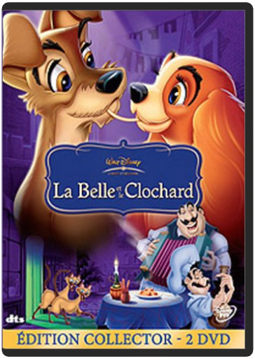

walt disney, 14 : cendrillon - édition collectorwalt disney  Cendrillon fait partie de ces classiques Disney intemporels et au charme toujours intact. Avec Blanche-Neige et La Belle au bois dormant, ce film fait partie du trio romanesque magique du premier âge d’or de Walt Disney, porté par l’atout maître des studios Disney : un savoir-faire incomparable pour la création des personnages secondaires. Pantoufle de vair, citrouille, fées, souris, autant d’images inoubliables qui participent à ce pur enchantement.  walt disney, 16 : peter pan - édition collectorwalt disney walt disney, 16 : peter pan - édition collectorwalt disney Et si nous pouvions nous envoler ? C'est ce que propose Peter Pan à Wendy et à ses frères. S'envoler pour un pays imaginaire où tout est permis aux enfants. Accompagnés de la fée Clochette, les enfants et les parents plongent toujours avec délectation dans l'un des très grands classiques de Walt Disney. Un succès dû, bien sûr, à Peter Pan lui-même mais surtout au capitaine Crochet, méchant grotesque, voulant à tout prix la peau du héros, à monsieur Mouche, comparse maladroit du capitaine, et au crocodile gobeur de main et de réveil, qui donne au dessin animé ses meilleures scènes. Ajoutons à cela des Indiens ombrageux, un rocher en forme de crâne, de magnifiques paysages, beaucoup de magie et d'humour : cela donne un film enchanteur qui a su marquer les esprits en utilisant un personnage mythique. Cette édition, double DVD collector, bourrée de bonus à la fois instructifs (making-of, documentaire sur les animateurs…) et ludiques (avec notamment l'album de Peter Pan ou le karaoké) a tout pour combler les fans du garçon qui ne voulait pas grandir. À noter également sur le second DVD un document rare présenté dans son intégralité : la première adapation de Peter Pan au cinéma, un film muet réalisé Herbert Brenon en 1924. —Marc Maesen walt disney, 17 : la belle et le clochard - édition collectorwalt disney Classique intemporel, La belle et le clochard n’a rien perdu de son pouvoir enchanteur. Avec ses personnages hauts en couleurs, ses situations savoureuses, son raffinement visuel et sonore, cette belle histoire d’amour est une sorte de gala de démonstration d’artistes parvenus au sommet de leur art. Jouant sur le décalage créé par l’application de comportements humains à des chiens, le film mélange humour et sérieux, détournement des genres (comédie romantique, films de prison et de gangsters) et franche émotion. Un cocktail détonant pour un moment de pur plaisir auquel on reviendra toujours sans jamais être déçu. Après avoir goûté l’incroyable travail de restauration visuel, on se réjouira à l’idée de visionner les suppléments de l’un des collectors les plus fournis et les plus passionnants de la collection Disney, grâce à la grande quantité de documents retrouvés dans les archives du studio. Création des personnages, production, composition des chansons, intégralité des story-boards, toute la genèse du film est ici abordée de manière pertinente et enrichissante. - www.ecranlarge.com  walt disney, 20 : merlin l'enchanteur - édition 45ème anniversairewalt disney walt disney, 20 : merlin l'enchanteur - édition 45ème anniversairewalt disney Merlin l'enchanteur (Édition 45ème anniversaire)  walt disney, 26 : les aventures de bernard et biancawalt disney walt disney, 26 : les aventures de bernard et biancawalt disney A New York, les souris du monde entier se réunissent et décident de porter secours à Penny, une petite orpheline séquestrée par l'affreuse Madame Médusa. Bernard et Bianca, intrépides détectives de choc, se portent volontaires... Cette enquete menée tambour battant va emmener nos deux sympathiques souris dans des endroits lugubres à souhait... mais surtout leur faire rencontrer de nombreux et pittoresques amis : Rufus le chat, Orville l'albatros et Evindure, la libellule asthmatique. |


 Made with Delicious Library
Made with Delicious LibraryNancy, State zipflap congrotus delicious library Thomas, Julien